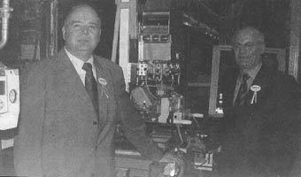

Dün
hizmete giren ve 2 milyon Euro'ya mal olan yeni Ar-Ge binasý,
ürün tasarýmlarýný üretime dönüþtürmede kilit bir misyon üstlenecek.
|

|
|
Yön.
Kurulu Baþk. Dr. Berner ve Bosch Isýtma Ürünleri Gen.
Md. Meinert (solda), Manisa'daki tesisin, grubun önemli
fabrikalarýndan olduðunu söyledi.
|
Ar-Ge
binasýnýn açýlýþýna katýlan Bosch Isýtma Ürünleri Yönetim Kurulu
Baþkaný Dr. Joachim Berner, geniþletilen Ar-Ge departmaný ile
birlikte Bosch Manisa tesislerinin sadece üreten bir üs olmaktan
çýktýðýný belirterek, "Bundan böyle Manisa fabrikamýz bir üretim
merkezi olmaktan çýkýp dünya pazarý için ürün tasarlayan, geliþtiren
ve üreten bir merkez olacak. Bu, Bosch için olduðu kadar Türkiye
için de büyük bir kazaným." dedi. Manisa fabrikasýnýn bugün
Bosch Termoteknik (ýsýtma) grubunun en önemli fabrikalarýndan
biri haline geldiðini ifade eden Berner, "Manisa'da üretilen
ürünlerin kalitesi diðerleri ile kýyaslandýðýnda üst sýralarda
yer alýyor." dedi. Berner, Türkiye'deki yatýrýmlarýný geniþletmeye
devam edeceklerini söyledi. Bosch Manisa fabrikasýnýn, Bosch
Termoteknoloji'nin en önemli üretim merkezlerinden biri olmasýnýn,
Manisa fabrikasýnýn rekabet gücünü ve de Bosch'un Türkiye'ye
olan güvenini açýkça gösterdiðini vurgulayan Berner, "Bosch
Manisa Fabrikasý önemli know-how kaynaðý olacak ve bizim Avrupa
pazarýna yaklaþýmýmýzda kilit bir görev üstlenecektir." diye
konuþtu.
Zor
yýllardan sonra 2003 yýlýnda Türkiye ekonomisinin genelde
kendini toparladýðýný dile getiren Berner, þöyle devam etti:
"Bu olumlu geliþmenin 2004 yýlýnda da devam edeceðinden eminiz.
Türkiye'nin Avrupa Birliði'ne katýlým için gereken þartlarý
yerine getirmedeki kararlýlýðýný büyük bir saygý ile izlemekteyiz.
Fabrikamýzda biz bugünden bu standartlarý tanýyor ve gerçekleþtiriyoruz."
Berner, 'Türkiye'nin yabancý sermaye çekmedeki eksikliði nedir?'
sorusuna ise, "Türkiye'nin þikayet edilecek bir tarafý yok,
güvenimiz tam." dedi.
Bosch
Isýtma Ürünleri Genel Müdürü Roger Meinert de, Bosch'un geniþleyen
Ar-Ge departmaný ile birlikte, ürün tasarýmlarýný üretime
dönüþtürme hýzýnýn ve verimliliðinin artacaðýný belirtti.
Bosch Manisa fabrikasýnýn 103 milyon Euro ciroya ulaþtýðýný
ve ihracat oranýnýn yüzde 85 olduðunun altýný çizen Meinert,
"Bosch Manisa, bir üretim merkezi olmaktan çýkýp bir yetkinlik
merkezi olmak üzere yola çýkmýþtýr. Bu tesis, halihazýrdaki
Ar-Ge faaliyetlerinin çerçevesini geniþleterek ayný zamanda
Türk iþgücünün o mükemmel potansiyelinin nasýl verimle kullanýlabileceðinin
de örneði olacak." dedi.
Firma
hakkýnda:
1910
yýlýndan bu yana Türkiye'de faaliyet gösteren Bosch Grubu,
bugün 5 ayrý kuruluþu kapsamaktadýr. Otomotiv yan sanayii
Bursa'da 3 farklý noktada yerleþik fabrikalarý ile üretim
yapmaktadýr.
Ýstanbul'da BSH-Profilo Elektrikli Gereçleri ev aletleri,
Bosch-Rextroth ise makine sanayi için hidrolik ve pnömatik
komponentler imal etmektedir.
Bosch Isýtma Ürünleri Manisa'da doðalgaz ile çalýþan kombi
ve þofben üretmektedir.
Bosch Grubu'nun Türkiye'deki þirketlerinde ve ortaklýklarýnda
2002 yýlýnda toplamda yaklaþýk 6.200 kiþi çalýþmakta olup,
954 Milyon Euro ciro gerçekleþtirilmiþtir. Böylelikle Bosch,
Türkiye'de en büyük yabancý iþverenlerden biri durumuna gelmiþtir.
Otomotiv odaklý faaliyet gösteren Bosch Sanayi ve Ticaret
AÞ, 1971 yýlýndan bu yana ürünlerini Türkiye'de pazarlamakta
ve Bursa'da üç fabrika ile hizmet vermektedir.
Bunlardan birincisi dizel sistemleri fabrikasý 92.800 m2 kapalý
alana yerleþik olup Bursa Organize Sanayii Bölgesinde enjektör,
enjektör kütüðü kombinasyonu, 2001 yýlýnda üretimine geçilen
Common-Rail Sistemleri için enjektörler ve yine ayný bölgedeki
ikinci fabrika 2002 yýlýnda üretimine geçilen Birim Enjektörü
üretim gamýnda bulundurmaktadýr.
Üçüncü fabrika ise Bursa Ovaakça mevkiinde kurulu Bosch Fren
Sistemleri San. ve Tic. A.Þ., hidrolik fren sistemleri için
komponentler imal etmektedir.
1988'den bu yana Ýstanbul'da faaliyet gösteren satýþ ve pazarlama
merkezi otomotiv yedek parça, test ve muayene cihazlarý, Blaupunkt
araç multimedya sistemleri ve elektrikli el aletlerinin Türkiye
ve Türki Cumhuriyetleri'ne daðýtýmýndan sorumludur.
70'i otomotiv yedek parça, 450'si elektrikli el aletlerine
ve 37'si Blaupunkt'a ait olmak üzere toplam 557 bayii ile
yurt çapýnda faaliyet göstermekte, yine 201'ü otomotiv 49'u
el aletleri ve 36'sý Blaupunkt olmak üzere toplam 286 adet
servis ile hizmet vermektedir. Ayrýca Türki Cumhuriyetler'de
9adet otomotiv servisi bulunmaktadýr.
Bosch yine 2003 yýlýnda, Ýstanbul Sanayi Odasý'nýn en büyük
500 þirket sýralamasýnda 24. ve ihracatçýlar sýralamasýnda
ise 9. konumu elde etmiþtir. Otomotiv sektörü içinde ise en
büyük 5. ihracatçý firmadýr.
Daha fazla bilgi için:
|